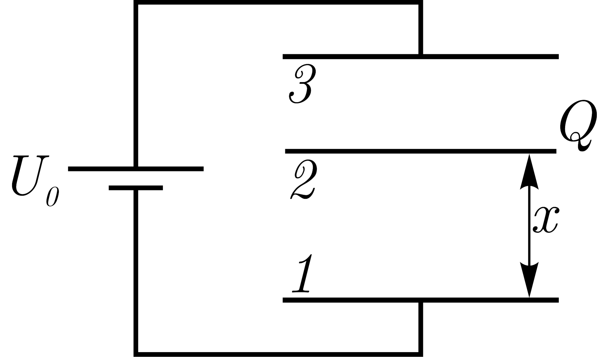
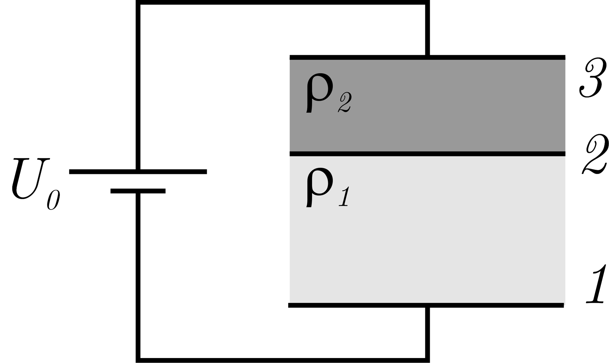

X16 (2016) — English translation
Between plates 1 and 3 of a flat capacitor, a thin metal plate 2 with a charge $Q$ was placed parallel to the plates of the capacitor (Fig. 1). A capacitor is connected to a battery with an emf equal to $U_0$. The areas of all three plates are the same and equal to $S$, and the distance between them is much less than $\sqrt{S}$.

Plate 2 was discharged, and the volumes between the plates were filled with dielectric liquids (Fig. 2) with the same dielectric constant $\varepsilon$ but with different resistivities $\rho_1$ and $\rho_2$ ($\rho_1 < \rho_2$).

Source: https://pho.rs/p/4004